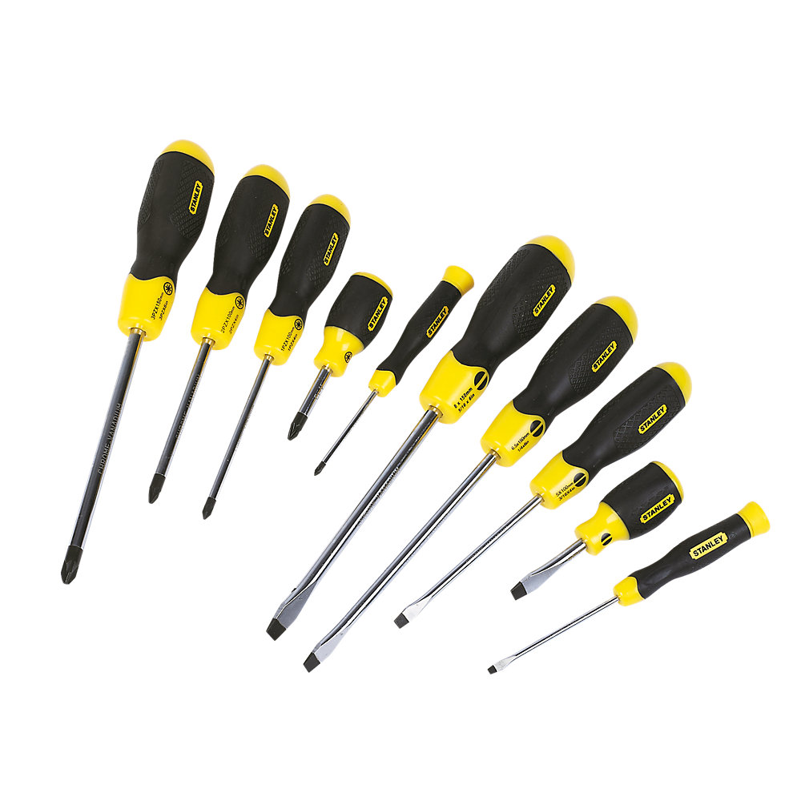
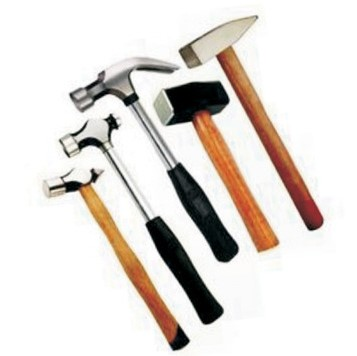

Tools
In the world of engineering and digital fabrication, a lot of tools and mechanical devices are made use so that you as an individual creator can make sure your design can come to life.
Before we move on to learning some of the tools and mechanical devices present in the FabLab, please make sure to go through the FabLab Safety. Your safety and those working around you are important than your poject.
Types of Hand Tools

Screwdrivers
Screwdrivers

Hammers
Hammers